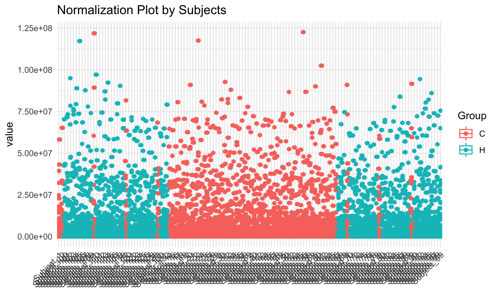
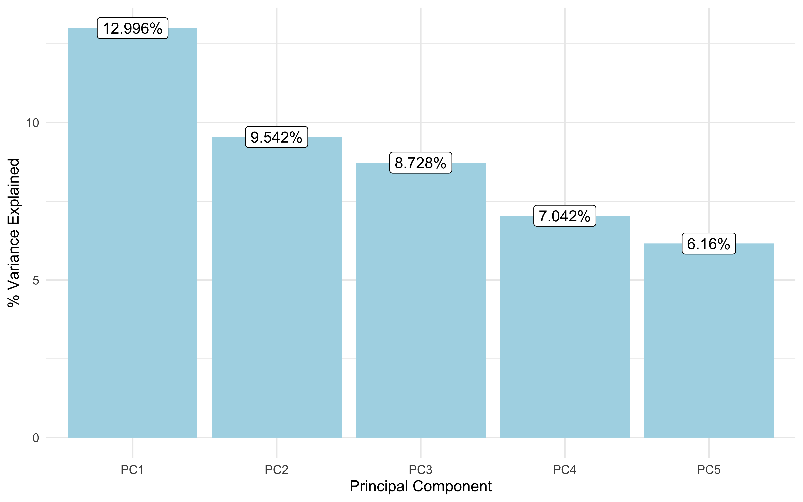
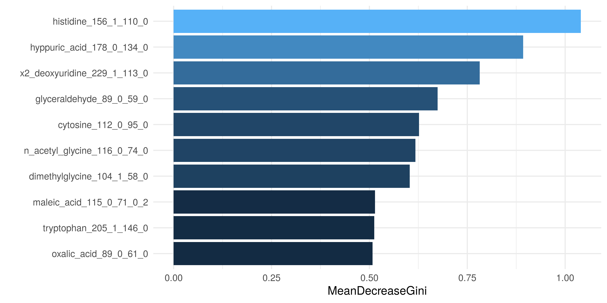

POMA Workflow Overview
Pol Castellano-Escuder
2020-05-10
Source:vignettes/POMA-demo.Rmd
POMA-demo.RmdInstallation
# install.packages("devtools") devtools::install_github("pcastellanoescuder/POMA")
Load or Create an MSnbase::MSnSet() object
We can load an MSnSet object directly or we can create our own object from matrix and/or data frames using PomaMSnSetClass function.
# load example data data("st000336") # # subset example data # my_features <- t(exprs(st000284))[c(1:8, 120:127) ,] # # my_target <- pData(st000284)[c(1:8, 120:127) ,] # my_target <- my_target %>% rownames_to_column("ID") # # # create a smaller MSnSet object from example data # example_data <- PomaMSnSetClass(features = my_features, target = my_target)
Pre Processing
Missing Value Imputation
Often in mass spectometry analyses we have to deal with some missing values in our data. To face this in POMA just run the following line of code to impute your missings!
imputed <- PomaImpute(st000336, ZerosAsNA = T, RemoveNA = T, cutoff = 20, method = "knn") imputed ## MSnSet (storageMode: lockedEnvironment) ## assayData: 30 features, 57 samples ## element names: exprs ## protocolData: none ## phenoData ## sampleNames: DMD004.1.U02 DMD005.1.U02 ... DMD173.1.U02 (57 total) ## varLabels: group steroids ## varMetadata: labelDescription ## featureData: none ## experimentData: use 'experimentData(object)' ## Annotation: ## - - - Processing information - - - ## Imputed (knn): Sun May 10 22:32:39 2020 ## MSnbase version: 2.12.0
Note that the object has been updated with imputation information.
Normalization
The next step is the normalization of the data. Again, POMA offers several methods to normalize the data by running just one line of code:
normalized <- PomaNorm(imputed, method = "log_pareto") normalized ## MSnSet (storageMode: lockedEnvironment) ## assayData: 30 features, 57 samples ## element names: exprs ## protocolData: none ## phenoData ## sampleNames: DMD004.1.U02 DMD005.1.U02 ... DMD173.1.U02 (57 total) ## varLabels: group steroids ## varMetadata: labelDescription ## featureData: none ## experimentData: use 'experimentData(object)' ## Annotation: ## - - - Processing information - - - ## Imputed (knn): Sun May 10 22:32:39 2020 ## Normalised (log_pareto): Sun May 10 22:32:39 2020 ## MSnbase version: 2.12.0
Note that the object has been updated with normalization information.
Normalization effect
Sometimes, we could be interested in how the normalization process has affected our data?
To answer this question, POMA offers two exploratory functions, PomaBoxplots and PomaDensity, that can help to understand the normalization process.
PomaBoxplots generates boxplots for all samples or features (depending on the group factor) of an MSnSet object. Here, we can compare objects between and after normalization step.
p1 <- PomaBoxplots(imputed, group = "samples", jitter = FALSE) + ggtitle("Not Normalized") + theme(legend.position = "none") # data before normalization p2 <- PomaBoxplots(normalized, group = "samples", jitter = FALSE) + ggtitle("Normalized") # data after normalization p1 + p2

On the other hand, PomaDensity shows the distribution of all features before and after the normalization process.
p3 <- PomaDensity(imputed, group = "features") + ggtitle("Not Normalized") + theme(legend.position = "none") # data before normalization p4 <- PomaDensity(normalized, group = "features") + ggtitle("Normalized") # data after normalization p3 + p4

Statistical Analysis
Univariate Analysis
T-test
ttest_res <- PomaUnivariate(normalized, method = "ttest", paired = FALSE, var_equal = FALSE, adjust = "fdr") ttest_res %>% rownames_to_column() %>% head() ## rowname mean_Controls mean_DMD Fold_Change_Ratio ## 1 x1_methylhistidine -0.44 0.12 -0.273 ## 2 x3_methylhistidine -0.52 0.14 -0.269 ## 3 alanine -0.31 0.08 -0.258 ## 4 arginine -0.09 0.02 -0.222 ## 5 asparagine -0.33 0.09 -0.273 ## 6 aspartic_acid -0.15 0.04 -0.267 ## Difference_Of_Means pvalue adj_pvalue ## 1 0.56 7.189501e-07 2.156850e-06 ## 2 0.66 6.752457e-03 8.807553e-03 ## 3 0.39 1.705051e-03 2.435787e-03 ## 4 0.11 6.201234e-01 6.415069e-01 ## 5 0.42 1.468845e-04 2.754085e-04 ## 6 0.19 2.742384e-01 2.938269e-01
Limma
limma_res <- PomaLimma(normalized, contrast = "Controls-DMD", covariates = FALSE, adjust = "fdr") limma_res %>% rownames_to_column() %>% head() ## rowname logFC AveExpr t P.Value adj.P.Val ## 1 tryptophan -0.7043722 -2.526001e-18 -5.370089 8.483460e-07 2.545038e-05 ## 2 ornithine -0.5793056 -7.017544e-05 -4.716228 1.086017e-05 1.564505e-04 ## 3 lactate -0.7362500 -3.043375e-19 -4.557179 1.973487e-05 1.564505e-04 ## 4 valine -0.6374500 3.347712e-18 -4.542278 2.086007e-05 1.564505e-04 ## 5 pyruvate -0.6101333 1.754386e-05 -4.321312 4.696326e-05 2.817796e-04 ## 6 a_kg -0.6932278 3.508772e-05 -4.197650 7.328780e-05 3.460676e-04 ## B ## 1 5.466927 ## 2 3.026028 ## 3 2.457038 ## 4 2.404283 ## 5 1.633631 ## 6 1.212285
Multivariate Analysis
Principal Component Analysis
multiv_pca <- PomaMultivariate(normalized, method = "pca", components = 5, scale = FALSE, center = FALSE)
multiv_pca$score_data %>% head() ## PC1 PC2 PC3 PC4 PC5 ## DMD004.1.U02 -2.5649 0.6355 0.7245 0.6534 0.2842 ## DMD005.1.U02 -2.0100 0.5094 1.0782 0.7221 0.5130 ## DMD007.1.U02 -1.3740 -0.8677 0.7206 0.1952 -0.1432 ## DMD119.2.U02 -1.0940 0.6831 -0.4605 1.7888 -1.2811 ## DMD137.1.U02 -1.0536 -1.0586 0.7100 0.3621 0.5450 ## DMD148.2.U02 -2.8552 0.0986 0.4502 -0.2186 -0.0318
p5 <- multiv_pca$screeplot + ggtitle("Scree Plot") p6 <- multiv_pca$scoresplot + ggtitle("Scores Plot") p5 + p6

Random Forest
rf_res <- PomaRandForest(normalized, folds = 3, nvar = 10)
Confusion matrix of the random forest model:
rf_res$confusion_matrix ## Controls DMD class.error ## Controls 0 3 1.0000 ## DMD 1 15 0.0625
Top 10 best predictors:
rf_res$gini_plot
